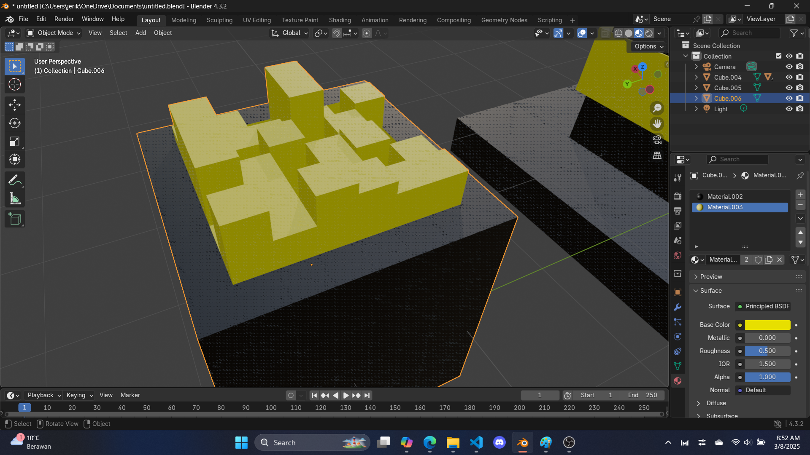

St. Patrick Objects - Part 4
"we need color"
Coloring all the objects
With all 3 objects in place, it is time to color them, switch to viewport shading to see your objects turning from grey to white, this indicates the viewport shading this active
Step 1: color the clover
let's color the clover first, this is the easiest to color as a clover's color is... green
click on material in the sidebar and create a new material (click on the new material button)
switch base color to green (or perhaps you have a different idea on what this clover should look like?)
color the remaining leaves green, since you have made the material, you just need to look for it, and reuse it.
Step 2: color the hat
The hat is going to introduce how to color specific areas black (the hat), and specific areas yellow (the belt)
To do this, go to edit mode first then color the whole thing black by creating a new material and set base color to black.
use the 'alt + left click' to select faces at a direction, create the new material with a base color of yellow and click assign to color a specific area to color them, here is a video of me attempting to do this:
A bit of a struggle, but essentially the steps are: select hat > create yellow material > select areas > assign material to them
Step 3: color the pot
The pot of gold has only 2 colors, black and yellow, since you already made them, just do what step 1 and 2 did. Ideally you would want to go back to object mode to color the whole thing black, then go to edit mode to paint certain areas yellow
"I have to click EVERY FACE in THAT pot o' gold?!?!"
The idea is to paint the buldge with yellow, any black spots in the gold area will make the object less belivable, there are ways to make it easier, the x-ray mode, assuming you are extruding up and no downs, you can simply highlight the whole thing and color them, the 'alt-left click'
Step 4: Camera
First let's get the camera in place, find the camera logo (or press numpad 0,if you have a numpad)
Next, there are a number of things to consider, pressing the 'N' key will open up the viewing properties, click lock camera to view, this is so you can freely move your camera as if you are viewing an object.
Then you need to click on the camera object in the scene collection to open access to the camera properties, there you can set the lens type, there are 3 types in that camera, perspective, orthographic (isometric) and panoramic. We will use orthographic and adjust orthographic scale to fit all objects in the screen.
Step 5: add a flat surface and render
'Shift + A' to add a mesh -> plane, this is just a flat surface, scale as big as possible so the camera just sees the color white and no grays seen
Click the rendering shading to start seeing your object getting rendered
note that you can change the type of rendering, EEVEE is fast, but that uses fake lighting to simulate how an object would look like, msot video games use this
But cycles renders objects accurately, there is a huge difference
Finally you can click render image in the render tab